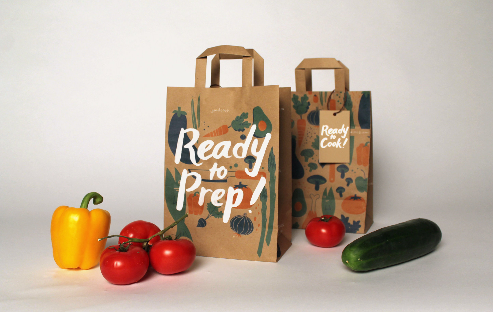
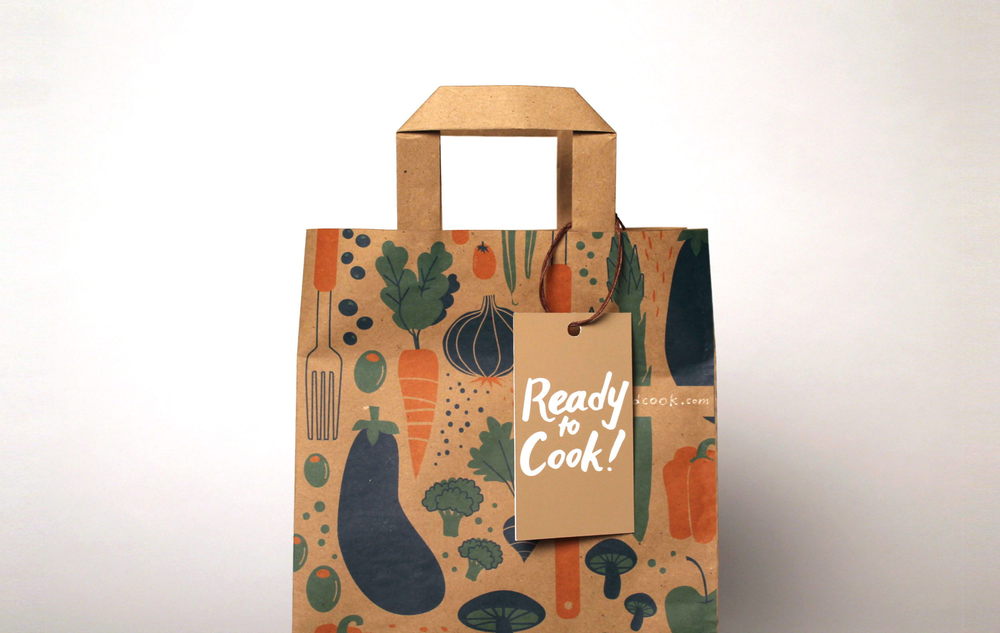

GoodCook
Challenge
One of the most common resolutions is to eat healthily, but could we make this lifestyle more approachable and help people build lasting habits?
Outcome
GoodCook is a program that promotes healthy eating through social interaction and peer accountability. We designed a system with spatial, print and digital components.
Role & Contributions
- User research
- Concept ideation
- Visual design
Teammates
- Natalie Harmon
- Christie Chong
System Overview
GoodCook is a program that encourages healthy cooking and eating through social interaction. A pop-up shop on campus with bags of free vegetables will motivate students to use the ingredients to get cooking. From there, the bag's design and tag will direct them to the GoodCook website. Students will create accounts there, gather friends to cook for (and vice versa), and use the site as a logging tool for longterm cooking.

Spatial Piece: Pop-Up Shop
The pop-up shop draws interest on college campuses and raises awareness about healthy eating and GoodCook.
Print Piece: Bag
Our second piece is a paper bag that provides more information about the program's benefits and steps. It comes with a piece of produce and an easy recipe to follow.
 Digital Piece: Website
Our digital piece is a website that includes features for scheduling who's cooking next, setting health goals, marking favorite recipes, and more.


Research
Key Findings
For our audience, we decided to focus on college students like ourselves because there is a great need for better eating habits on a college campus. We conducted interviews with some of our peers to find out how often they felt they ate "well."
The main reason we found that students avoid cooking was because they feel incompetent at it. So, we aimed to help them overcome their fear of cooking by presenting cooking as a simple and beneficial habit for a healthy lifestyle. We also realized that a social aspect to cooking was helpful to 1. encourage quality cooking and 2. holding accountability. Thus, our secondary goal was to focus on cooking in community.
I don't really know how to cook. I kind of just make whatever, because it's easier.
Developing Visuals
Exploration
Once we had our concept, we started working on forming our visual language. We tested out many different colors and visual styles in our process, asking people how each style made them feel. We sought to create a visual voice that felt fun, playful, and exciting.


In the end we decided on a unique, fresh-looking color palette, vectored graphics for clean edges, and no outlines. This style also worked well with the Gotham font family, which we chose for its round, friendly qualities.

Final Style Guide
This visual style guide describes our research validation, the context in which each piece exists, and the relationship between our written content and imagery.

Probably the only time I make real food is when I'm having people over. I've gotta impress. And it's fun to cook together.
Iterations
Pop-Up Shop
We used sketches and mock setups to explore ways to create an attention-grabbing spatial piece.


Paper Bag
Bag iterations consisted of testing the size of our graphics when printed and testing our colors on brown paper.


Website
For the website, we mocked up key pages like the dashboard to communicate the site's intended purpose. We worked to transfer our patterns from print to a digital platform and keep a cohesive visual language.


Learning Outcomes
- Defining a problem and identifying its constraints, audience, physical context and assumptions going in
- Discerning the differences in designing for long-term use (website) and short-term calls to action (pop-up shop, bag)
- Designing a cohesive system with multiple touchpoints
- Developing a visual voice that is appropriate for an intended message and subject matter
Reflection
If I were to do this project again, I would rework the web and pop-up shop pieces to take better advantage of those particular media. For example, the web experience could be more dynamic, where it is currently being treated like a print piece. I would also like to think deeper about the system of services that would support this program, such as partnerships with local vendors to fund the produce giveaways.